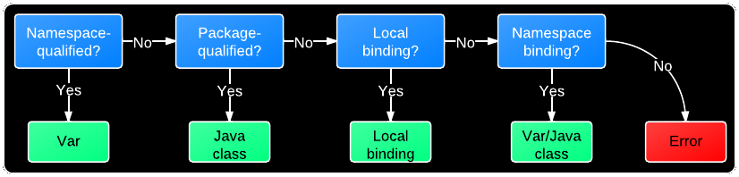

Namespaces, Vars, and Symbols (Oh, My!)
Table of Contents
- 1 Namespaces, Symbols, and Vars (Oh, My!)
- 1.1 Slides
- 1.1.1 But First, a Reaction to Rich's Keynote
- 1.1.2 Holy Shit!
- 1.1.3 Me
- 1.1.4 Intended Audience
- 1.1.5 The Big Pile of Code
- 1.1.6 What's Going On Here?
- 1.1.7 Loading
- 1.1.8 Require
- 1.1.9 Evaluation
- 1.1.10 What is a Symbol?
- 1.1.11 What is a Namespace?
- 1.1.12 What is a Var?
- 1.1.13 Creating a Var
- 1.1.14 Referring Vars
- 1.1.15 Referring Vars
- 1.1.16 Viewing Namespace Mappings
- 1.1.17 Viewing Namespace Mappings
- 1.1.18 How are Symbols Evaluated?
- 1.1.19 The Code Again
- 1.1.20
ns
- 1.1 Slides
- 2 Fin
1 Namespaces, Symbols, and Vars (Oh, My!) title
1.1 Slides
1.1.1 But First, a Reaction to Rich's Keynote title
1.1.2 Holy Shit! title
1.1.3 Me
- Craig Andera
- @craigandera
- craig@thinkrelevance.com
1.1.4 Intended Audience
- People who have been using Clojure a bit
- People who haven't written a book about it
- Anyone who remains confused about
(ns)syntax
1.1.5 The Big Pile of Code
(ns hello (:require [clojure.string :as str])) (defn -main [& args] (println "hello" (str/join " and " args)))
1.1.6 What's Going On Here?
- A file gets loaded
- It gets evaluated
1.1.7 Loading
- Primary API for this is
require
- Takes ns name and finds a file on CLASSPATH
- Turns text in file into Clojure data structures
- Evaluates them
- Also lets you provide an alias
1.1.8 Require
;; Load $CLASSPATH/net/cgrand/enlive_html.clj (require 'net.cgrand.enlive-html) ;; Still have to use namespaces (net.cgrand.enlive-html/render ...)
;; Load it and let us refer to it as html (require '[net.cgrand.enlive-html :as html]) ;; Better, but still need namespace (html/render ...)
1.1.9 Evaluation
- Many things in Clojure evaluate to themselves
- Maps, sets, vectors, strings, numbers
- Maps, sets, vectors, strings, numbers
- Some things don't
- Lists => invocations
- Symbols => ??
- Lists => invocations
1.1.10 What is a Symbol?
- A name
- With an optional namespace
- Has no value
foo ; Unqualified symbol bar/foo ; Symbol with namespace
1.1.11 What is a Namespace?
- A mapping from symbols to
- Java classes
- Vars
- Aliases
- Java classes
1.1.12 What is a Var?
- An association between a name and a value
- Value is often a function
defcreates a new var in the current namespace
- Optionally associates a value
- Optionally associates a value
1.1.13 Creating a Var
(ns some.name) ;; Var #'some.name/foo is unbound (def foo) ;; Var #'some.name/bar has function value (defn bar [x] (+ 2 x))
1.1.14 Referring Vars fixnowrap
- Vars from other namespaces can be mapped in
referdoes this
- Can pull them in selectively via
:onlyor:exclude
1.1.15 Referring Vars
;; Refer all public symbols (refer 'net.cgrand.enlive-html) ;; Refer only foo and bar (refer '[blah.whatever :only (foo bar)]) ;; Refer everything except defroutes and GET (refer '[compojure.core :except (defroutes GET)])
1.1.16 Viewing Namespace Mappings
| Function | Description |
|---|---|
ns-map | Map of all vars and classes in NS |
ns-publics | Map of symbols to public vars |
ns-imports | Map of symbols to Java classes |
ns-interns | Map of symbols to this NS's vars |
ns-aliases | Map of aliases to namespaces |
ns-refers | Map of symbols to referred vars |
1.1.17 Viewing Namespace Mappings
(ns-map 'user) ;; {sorted-map #'clojure.core/sorted-map, ;; read-line #'clojure.core/read-line ;; ...}
(ns-imports 'user) ;; {ProcessBuilder java.lang.ProcessBuilder, ;; Enum java.lang.Enum, ;; ...}
1.1.18 How are Symbols Evaluated? fixnowrap

- When symbol evaluates to var, var evaluates to value
- This can make the code faster
1.1.19 The Code Again
(ns hello (:require [clojure.string :as str])) (defn -main [& args] (println "hello" (str/join " and " args)))
1.1.20 ns
(ns foo.bar (:refer-clojure :exclude [ancestors printf]) (:require (clojure test test.junit)) (:use (my.lib this that)) (:import (java.util Date Timer Random) java.sql.Connection))
2 Fin title
2.1 Bonus Material title
2.1.1 Using vars
- Passing function by name passes function object
- If you want to change it later, you're out of luck
- Can pass the var instead
- Use
varto do this - Can also use var-quote #'
2.1.2 Using vars
(ns hello-world (:use compojure.core, ring.adapter.jetty)) (defroutes main-routes ...) ;; Can't update routes dynamically (run-jetty main-routes {:port 8080}) ;; Unless we do this (run-jetty (var main-routes) {:port 8080}) ;; Which is the same as this (run-jetty #'main-routes {:port 8080})
2.1.3 resolve
- You can look up vars at runtime with
resolve - Handy for resolving circular dependencies
- Usually better to refactor code instead
2.1.4 Circular Dependencies fixnowrap
;; This won't work (ns one (:require two)) (ns two (:require one))
2.1.5 Circular Dependencies fixnowrap
(ns one) (defn a [] (require 'two) ((resolve 'two/b)))
(ns two (:require one)) (defn b [] "It worked!") (defn c [] (one/a))
2.2 Notes
- Should do more detail on the namespace mappings
- What's the motivation for people with a bit more experience?
- Could talk more about how to use vars directly
- E.g. In compojure when you pass the var rather than the symbol
- Two things that nobody understands
- The compojure trick
- Crufting up a var to work around cyclic dependencies
((var ns name) blah)
- Could talk more about how to use vars directly